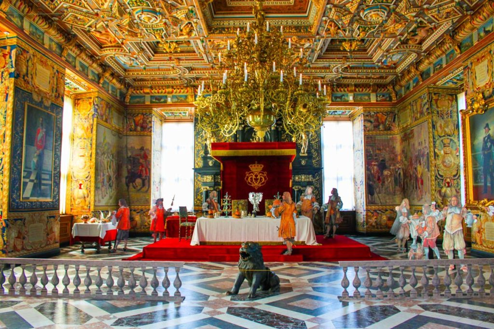
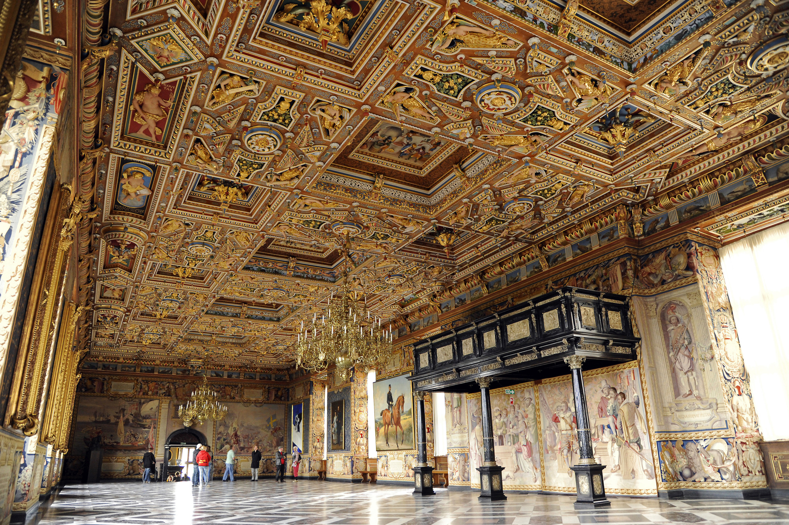
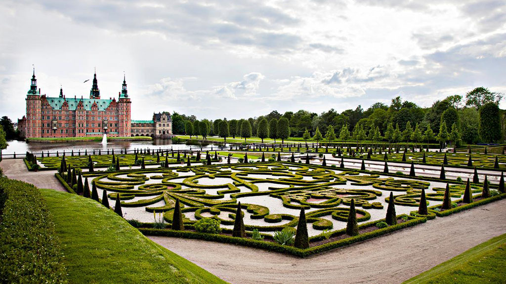

The throne room
 the gardens

back to home
unlike the other two royal families, these two royal family are much less known. even if they are not as well known, doesn't mean their castles and palaces are less esqusite, in fact they ar ejust a stunning as the other two palaces and castles I have mentioned.
theres a pretty good chance you havn't heard of the portugese royal family. there are two main reasons for this, one portugal is a pretty small country, two the royal family is no longer in power. even with no royal family, their palces and castles are stunning. I have seen many of them, and can say from personal experience they ar equisite and well worth your time.
this palace is an incredible way to spend your day. it is 45 miinutes away from lisbon, so an easy a great way to spend a say in portugal. you don't want to miss this palace. not only is the palace itself beautiful, the views are just incredible. when I vivsted portugal It was by far one of my favorite palace I visited.
This is another lesser known royal family that is worth your knowing. Unlike Portugal they are still ruling Denmark. they are also seen by many as the perfect royal family. so even is you don't know thier family you should defanitaly know the palaces they own. don't mistake their castles to be less stunnig because they are samller. you won't undertestimate their power after you visit these castles. so what are you waiting for?
This is a beautiful palace that is well worth your time. It's rooms and landscape are just astounding. the detail that is put into each floor, each crown molding, will make you really appreciate the rooms a lot more. you will be in awe of just the vast grandness of this palace.